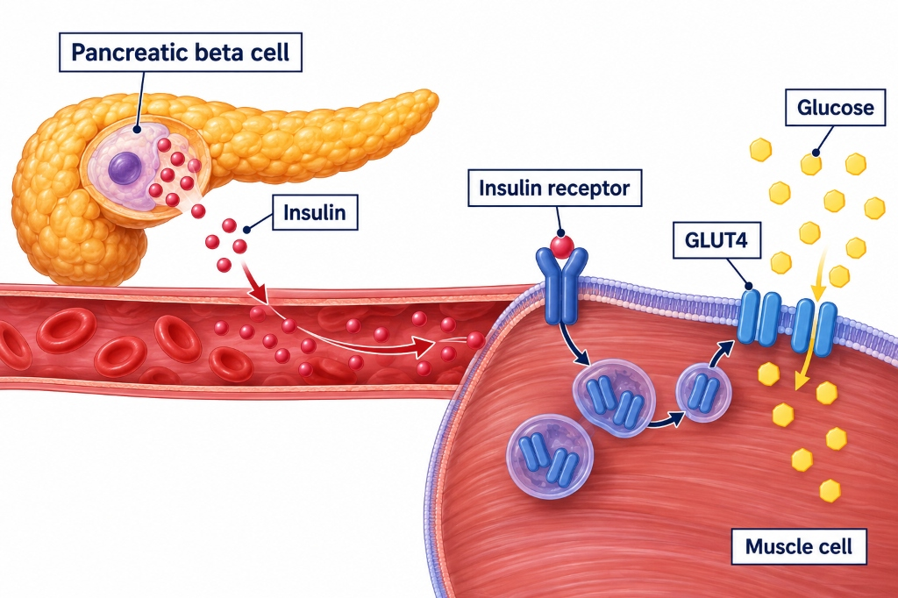

DIABETES MELLITUS: PATHOPHYSIOLOGY, CRITERIA & METABOLOMICS
We begin our curriculum with Diabetes Mellitus. Review the established 2026 ADA diagnostic criteria, discover the biological limitations of glycation markers, master the molecular actions of Branched-Chain Amino Acids (BCAAs) and endothelial miR-126, and examine cutting-edge pre-disease proteomic subtyping.
Diabetes mellitus encompasses metabolic disorders marked by chronic hyperglycemia resulting from defects in insulin secretion (pancreatic beta-cell apoptosis), insulin action (peripheral insulin resistance in skeletal muscle, liver, and adipose tissue), or both. Long-term glucotoxicity and lipotoxicity stimulate advanced glycation end-products (AGEs), protein kinase C (PKC) activation, sorbitol accumulation, and endothelial oxidative stress, culminating in microvascular (retinopathy, nephropathy, neuropathy) and macrovascular (CAD, stroke, PAD) catastrophe.
CLASSICAL BIOMARKERS: ADA 2026 STANDARDIZED DIAGNOSTIC CRITERIA
These four traditional laboratory tests form the official basis of diabetes diagnosis worldwide.
| Diagnostic Test | Category | 2026 ADA Cutoff Threshold | Biological Mechanism & Physiological Significance | Confirmatory Requirement |
|---|---|---|---|---|
| Fasting Plasma Glucose (FPG) | Classical | ≥ 126 mg/dL (7.0 mmol/L) | Reflects overnight basal hepatic gluconeogenesis and glycogenolysis following ≥ 8 hours of fasting without caloric intake. Evaluates basal hepatic insulin resistance. | Mandatory repeat testing on a subsequent day if the patient is asymptomatic. |
| 2-Hour OGTT (75g Load) | Classical | ≥ 200 mg/dL (11.1 mmol/L) | Evaluates postprandial glucose clearance, peripheral insulin-stimulated glucose uptake in skeletal muscle, and early-phase beta-cell insulin secretion. | Mandatory repeat testing on a subsequent day if the patient is asymptomatic. |
| Glycated Hemoglobin (HbA1c) | Classical | ≥ 6.5% (48 mmol/mol) | Reflects non-enzymatic ketoamine glycation of the N-terminal valine of hemoglobin beta chains via an Amadori rearrangement over the 120-day erythrocyte lifespan. | Mandatory repeat testing; must use NGSP-certified assay standardized to DCCT. |
| Random Plasma Glucose (RPG) | Classical | ≥ 200 mg/dL (11.1 mmol/L) | Detects gross systemic hyperglycemia in patients presenting with classic catabolic symptoms (polyuria, polydipsia, unexplained weight loss) or hyperglycemic crisis. | Does NOT require confirmatory repeat testing if classic symptoms are present. |
HbA1c assumes a normal 120-day erythrocyte lifespan. Any condition that alters red blood cell survival severely invalidates the result!
- Falsely Low HbA1c: Hemolytic anemia, sickle cell disease, chronic blood loss, splenomegaly, pregnancy (2nd/3rd trimester), hemodialysis, and erythropoietin (EPO) therapy.
- Falsely High HbA1c: Iron deficiency anemia (prolongs older erythrocyte survival), aplastic anemia, asplenia.
FPG reflects a single static point in time, measuring overnight hepatic gluconeogenesis but completely missing postprandial glucose excursions.
- High Biological CV: Day-to-day intra-individual coefficient of variation is 5–10%, altered by acute stress, poor sleep, or infection.
- Late Indicator: Fasting glucose often remains normal in early pre-diabetes while postprandial glucose is already toxic.
Traditional diagnostic tests detect diabetes only after beta-cell failure has advanced to severe, irreversible levels.
- 50% Beta-Cell Loss: By the time fasting plasma glucose crosses 126 mg/dL, 50% to 70% of functional pancreatic beta-cell mass is already destroyed!
- Subclinical Microangiopathy: Endothelial damage begins 5–10 years before clinical diagnosis.
Biochemical Mechanism: Premature erythrocyte destruction significantly shortens average circulating RBC lifespan from ~120 days down to 30–60 days. Hemoglobin beta chains have far less ambient time to undergo non-enzymatic ketoamine glycation. Severe hyperglycemia will be dangerously masked as a 'normal' or 'low' HbA1c!
Recommended Clinical Action: Order Glycated Albumin (GA) or Continuous Glucose Monitoring (CGM).
PHYSIOLOGICAL INSULIN SIGNALING VS. MOLECULAR INSULIN RESISTANCE

BRANCHED-CHAIN AMINO ACIDS (BCAAs: LEUCINE, ISOLEUCINE, VALINE)
- The Catabolic Bottleneck: Unlike all other amino acids catabolized primarily in the liver, BCAAs are catabolized in extrahepatic tissues. The rate-limiting step is catalyzed by the mitochondrial Branched-Chain Alpha-Keto Acid Dehydrogenase (BCKD) multienzyme complex.
- Down-regulation in Insulin Resistance: In obesity and hepatic steatosis, BCKD expression and activity in adipose tissue and muscle are severely suppressed.
- The Toxic Feedback Loop: Accumulating BCAAs and branched-chain keto acids (BCKAs) hyperactivate mTORC1 via Rag GTPases, phosphorylating IRS-1 on inhibitory serine residues and terminating insulin-mediated glucose disposal.
- Landmark Framingham Study (Wang et al. 2011 Nature Med): In 2,422 normoglycemic participants followed for 12 years, individuals in the highest quartile of plasma BCAAs experienced a 5.24-fold higher risk (HR = 5.24, 95% CI: 2.10–13.11) of developing overt Type 2 Diabetes!

- Biological Class: ~22-nucleotide non-coding microRNA specifically transcribed in vascular endothelial cells.
- Normal Function: Post-transcriptionally silences SPRED1, maintaining physiological VEGF/ERK signaling and promoting endothelial survival and eNOS-mediated nitric oxide (NO) generation.
- Loss in Diabetes: Hyperglycemia and oxidative stress suppress miR-126 transcription (Zampetaki et al. 2010 Circ Res). Decreased circulating levels serve as an early liquid biopsy for subclinical microvascular damage before diabetic retinopathy or nephropathy manifests.
- Biological Identity: Ketoamine formed by non-enzymatic glycation of serum albumin (half-life ~14–20 days).
- 2–3 Week Intermediate Window: Bridges the gap between a single-point fasting glucose reading and the 120-day erythrocyte window of HbA1c. Ideal for tracking rapid medication adjustments.
- The Unbiased Advantage: Completely independent of red blood cell turnover! Remains accurate in hemolytic anemia, sickle cell disease, pregnancy, and hemodialysis where HbA1c is severely distorted.
- Consensus Clinical Target: > 70% of time spent within the target glycemic range of 70–180 mg/dL (> 16.8 hours/day).
- Microvascular Risk Link: Every 10% absolute gain in TIR strongly reduces microalbuminuria progression and retinopathy incidence.
- ADA 2026 Ruling: Current international consensus holds that evidence remains INSUFFICIENT to utilize CGM/TIR for initial diabetes diagnosis. It is an established therapeutic management and monitoring tool only.
CUTTING-EDGE PROTEOMICS & PRE-DISEASE SUBTYPING (2025–2026)

Xie et al. (2025 Diabetes Care): Adding a 6-protein panel to clinical models in 21,898 UK Biobank subjects gained +0.014 in external validation C-index. Demonstrates discrimination, but sparks cost-effectiveness debate.
Xiao et al. (2026 DOM) Subtyping: Analyzed 41,030 pre-disease individuals and uncovered 3 molecular phenotypes:
- Subtype 1 (Metabolically Healthy): Baseline risk (HR = 1.00).
- Subtype 2 (Mild Inflammation): Moderate cytokine stress (HR = 1.45).
- Subtype 3 (Dyslipidemia + Chronic Severe Inflammation): Elevated CRP, IL-6, ApoB, and depleted Adiponectin convey a massive 2.58-fold higher risk (HR = 2.58) of rapid diabetes onset!